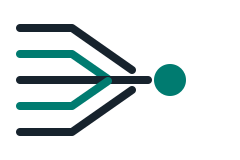
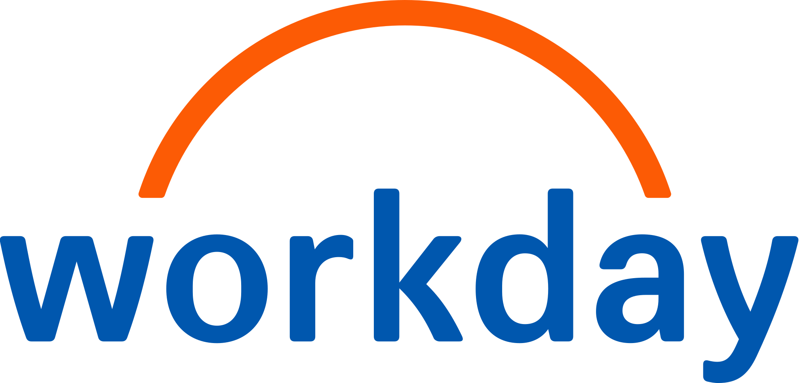

Case Studies
A few of these, up close.
Here's what some of that actually looked like in practice, from an AI-assisted prototyping tool to a pricing education program reaching millions of hosts. Each one covers the problem I was handed, what I did about it, and what shipped.

Product
Workprint
An AI-assisted tool for reconstructing project context, from product strategy through visual direction.

Take-home assignment
Intuit Analytics AI Job Aid
A learning strategy brief and job aid for Mailchimp's Analytics AI, built for Intuit's seasonal support agents as part of a job application, not internal production work.
Learning Design
Airbnb Experiences
Launch education for a brand-new Airbnb business line, built around the product's own six-dimension rating system.
Learning Design
5-Star Hosting
A learning series for Airbnb's Host Resource Center, mapped to the five real dimensions guests use to rate a stay.
Learning Design
Pricing Your Place
Pricing education for Airbnb's Homes hosts. Reached 29% of the addressable host population and generated $24M+ in gross booking value.

Research
Workday Learning Needs Survey
A 930+ respondent survey across 45+ job families, built into an FY23 learning and enablement roadmap.
Program Design
Pandora Onboarding
A blended onboarding program for 300+ client services hires across the US and Australia.